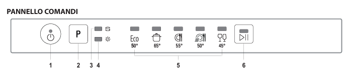
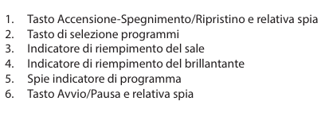
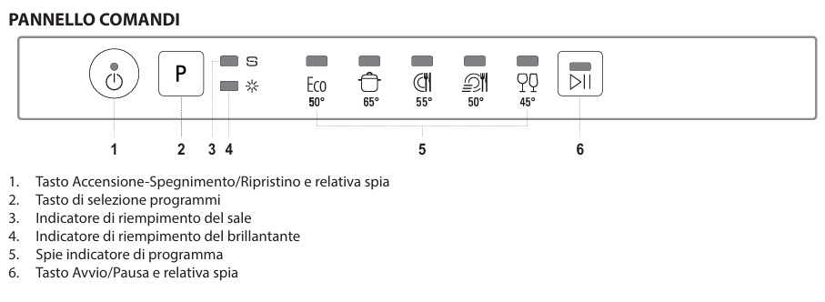
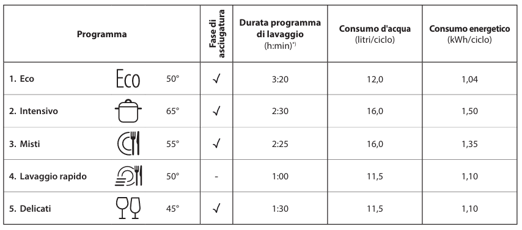
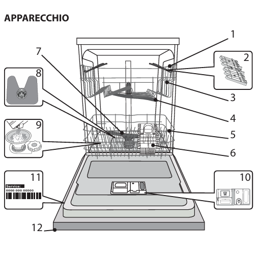
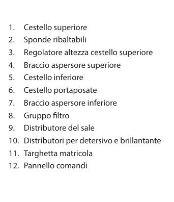

Instrucciones lavavajillas
Descripción del producto
- Cesta superior: para platos poco resistentes y utensilios delicados como vasos, tazas, platillos y ensaladeras con bordes bajos.
- Cesta inferior: para ollas, tapas, platos, ensaladeras y utensilios de gran tamaño.
- Cesta para cubiertos: para cubiertos y objetos pequeños.
- Dispensadores: para detergente y abrillantador.   
Uso diario
- Encendido: abre la puerta y presiona el botón de encendido/apagado.
- Carga de las cestas: carga las cestas con los utensilios como se describe arriba.
- Rellenado del dispensador de detergente: agrega el detergente al dispensador.
- Selección del programa: selecciona el programa deseado presionando el botón P.
- Inicio: presiona el botón de inicio/pausa y cierra la puerta dentro de los 4 segundos. Al iniciar el programa, se emite una señal acústica.
Programas
- Eco: para utensilios medianamente sucios; el programa más eficiente en términos de consumo combinado de agua y energía.
- Intensivo: para utensilios y ollas muy sucias (no usar para piezas delicadas).
- Mixtos: para platos con suciedad normal y restos secos de comida.
- Lavado rápido: para una carga reducida de utensilios normalmente sucios, permite obtener un resultado de lavado óptimo en menos tiempo.
- Delicados: para objetos delicados, más sensibles a las altas temperaturas, como vasos y tazas. 
Fin del ciclo de lavado
- Indicador de fin: la conclusión del ciclo se indica con una señal acústica.
- Apagado: abre la puerta y apaga el aparato presionando el botón de encendido/apagado, si aún está parpadeando.
- Descarga: espera algunos minutos antes de sacar los utensilios para evitar quemaduras, luego descarga primero la cesta inferior y después la superior.
Consejos útiles
- Ahorro energético: utiliza el lavavajillas solo con carga completa para optimizar el consumo de agua y energía.
- Agregar utensilios: si es necesario, agrega utensilios durante el ciclo abriendo la puerta, presionando el botón de inicio/pausa y cerrando la puerta dentro de los 4 segundos.
- Modificar el programa: si deseas cambiar el programa, apaga el aparato y vuelve a encenderlo seleccionando el nuevo ciclo.
Resolución de problemas
- Indicador de sal encendido: el depósito de sal está vacío. Rellénalo con sal específica para lavavajillas.
- Indicador de abrillantador encendido: el depósito de abrillantador está vacío. Rellénalo con abrillantador específico para lavavajillas.
- El lavavajillas no arranca: asegúrate de que el aparato esté correctamente conectado a la corriente eléctrica y que la puerta esté bien cerrada.
- Ruido excesivo: coloca correctamente los utensilios en las cestas y verifica que no obstaculicen la rotación de los brazos aspersores.
- Platos no limpios: verifica la disposición de los utensilios, el nivel de detergente y que los filtros no estén obstruidos.
-



Si tienes algún problema, contacta al anfitrión, Alessandro.